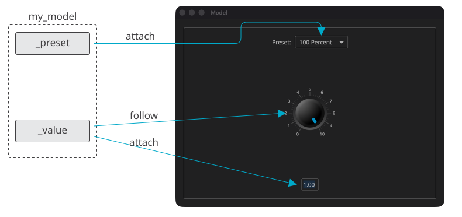
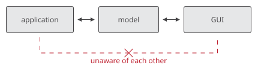
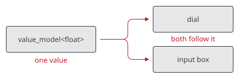

Model

Overview
Building a user interface, you typically have to deal with three requirements. The user interface has to present the application’s data. It has to notice when the user edits it. And it has to notice when the application itself changes it, perhaps from somewhere else entirely.
A typical approach involves holding the various GUI elements as private
members within an application or GUI class. These elements are managed as
shared pointers, created using the share(e) function and held in the
element hierarchy using the hold(p) function. The GUI class oversees the
interconnections and presents a higher-level view to the application
through a well-defined API. That works, but the application and the user
interface end up knowing a great deal about each other.
Models present a more elegant way to structure an Elements application. The
model (elements/model.hpp) serves as an abstraction for a data type that
is linked to one or more user interface elements. The actual data is
accessed and modified through the get and set member functions of the
derived class.
The Model does not care about the GUI element types it is interacting with. It is an abstract data type that models its underlying data type (e.g. float, int, enum, etc.). It looks and acts like a concrete type.
Adopting the model paradigm, the application and the user interface engage with the model independently, unaware of each other’s existence. The model serves as a central hub, facilitating and coordinating interactions between them:

-
The application is aware of the model, manages and interacts with it.
-
The GUI is also aware of the model and links to it.
-
The model is unaware of the GUI.
-
The model may be aware of the application, e.g. if it needs to get data from the application, but not necessarily, e.g. if it holds the data itself.
-
The GUI and the application are both unaware of each other.
Number 5 is an important design principle known as "decoupling," emphasizing the separation of concerns and promoting independence between the GUI and the application components. The advantages of decoupling in a software design context include modularity, scalability, reusability, and ease of maintenance.
| A complete program built this way can be found in this link: https://github.com/cycfi/elements/tree/master/examples/model |
value_model
The value_model<T> is a derived class of the template class model. It
specifically addresses the typical scenario where the data is internally
stored by value within the class. The class includes get and set member
functions following the Model concept required by the model template,
facilitating the retrieval and modification of data.
For example, a value_model<float> acts just like a float. You can assign a
value to it:
m = 1.0;or extract its value:
float f = m;Assigning a value updates all the user interface elements linked to the model. That is the point of the exercise: the application sets a value, and the user interface follows, without the application naming a single element.
In this example, we present a very simple model, comprising of a floating point value and a preset:
struct my_model
{
enum preset { preset_none, preset_full, preset_half };
value_model<float> _value = 1.0;
value_model<preset> _preset = preset_full;
};
While the examples here utilize the value_model, you have the
flexibility to create your custom subclass of the template class model to
implement more tailored methods of accessing your data. That is how you
model data that lives elsewhere: in a document, in a database, or in an
audio engine running in another thread. The user interface links to it in
exactly the same way and never knows the difference.
|
Updating
Assignment updates the linked elements. Two more member functions are useful when the data changes behind the model’s back:
update(val)-
Update the linked elements with
val, without setting the model. Use this when the underlying data has already been changed. update()-
Update the linked elements with the value the model currently holds. Use this to restore an element to its previous state, after rejecting an invalid edit, for instance.
Linking
A user interface element is linked to a model by supplying an
update_function via the on_update(f) member function:
auto c = m.on_update([](float val) { /* present val */ });There are two things worth knowing about on_update.
The first is that this member function can be called multiple times, and each supplied update function will be called sequentially at update time, in a first-come, first-served order. It adds an update function; it does not replace the one before it. Any number of elements may present the same value. A dial and a text box over the same float will both follow it, and neither displaces the other.

The second is that it returns a connection. You can pass that to
disconnect to take the update function off the model again:
m.disconnect(c);This matters because an update function outlives the element it was written for. A model belongs to the application and may live for as long as the program runs, while an element belongs to a view, which may be torn down and built again. An application that builds its user interface once may ignore the connection and let the update function stay for good. Anything that rebuilds one, a plugin editor being opened a second time for instance, has to disconnect, or dead update functions will accumulate on the model.
You will rarely need to call on_update or disconnect yourself. The
view’s bindings, described below, do it for you and get the lifetime right.
|
The View’s Bindings
Every view owns a model_binder, which you get through the bindings()
member function. This is the recommended way to link elements to models,
because it takes care of the three things that are easy to get wrong.
-
It refers to each element weakly, so an element that is already gone is skipped rather than touched.
-
It keeps the connections and takes them off the models when the view is destroyed. The bindings live for exactly as long as the view whose elements they serve.
-
It refreshes the element after the model changes, so an update function never has to.
| The models have to outlive the view. Declare them before it: what is declared first is destroyed last. |
my_model model; // declared before the view
view view_(_win);bind
bind links a control to a model both ways. The control presents the
model, and whatever the user does to the control is assigned to the model:
auto dial_ptr = share(dial(basic_knob<80>()));
view_.bindings().bind(model._value, dial_ptr);A control, here, is any element with a value(v) setter and an on_change
callback: the sliders, the dials, and the selectors.
If the control’s travel is not in the model’s unit, you can supply a pair of conversions. A fader marked in decibels over a linear gain, for example:
view_.bindings().bind(model._gain, fader,
[](double gain) { return to_db(gain); }, // what the fader presents
[](double db) { return from_db(db); } // what the model takes
);follow
follow links a control to a model one way. The control presents the
model, but whatever the user does to the control is handed to a callback
instead of being assigned, leaving you to decide what reaches the model:
view_.bindings().follow(model._value, dial_ptr,
[&model](double val)
{
model._value = val;
model._preset = my_model::preset_none; // no longer a preset
}
);Use this when setting the value is not the whole story, as above, or when the change has to go somewhere else first, as when a plugin sends the edit to its host, and the host sets the parameter in turn.
follow also accepts a conversion, for a control whose travel is not in
the model’s unit.
attach
Not every element presents a value through a value(v) setter. A label
presents it as text. attach is the general form. You give it a function
that puts the model’s value into the element, and it is called immediately
and whenever the value changes thereafter:
view_.bindings().attach(model._value, input_box,
[](auto& input, double val)
{
std::ostringstream stream;
stream << std::fixed << std::setprecision(2) << val;
input.set_text(stream.str());
}
);The element is referred to weakly and refreshed for you, as with bind and
follow.